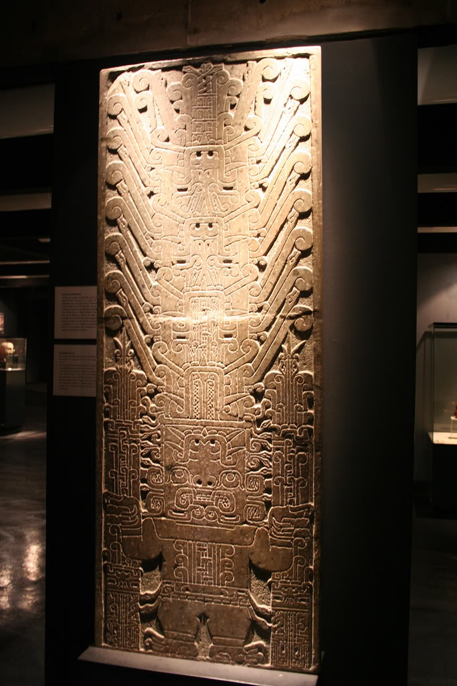

La Estela Raimondi es una escultura lítica perteneciente a la cultura Chavín,
hallada en el centro ceremonial de
Chavín de Huántar,
en la región Áncash, Perú. Fue tallada durante el periodo Formativo y
constituye una de las obras más representativas del arte religioso chavín.
